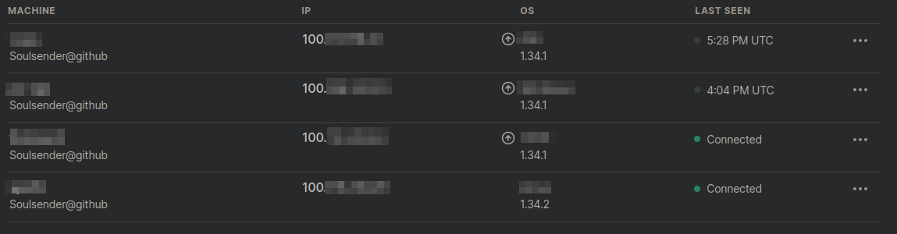
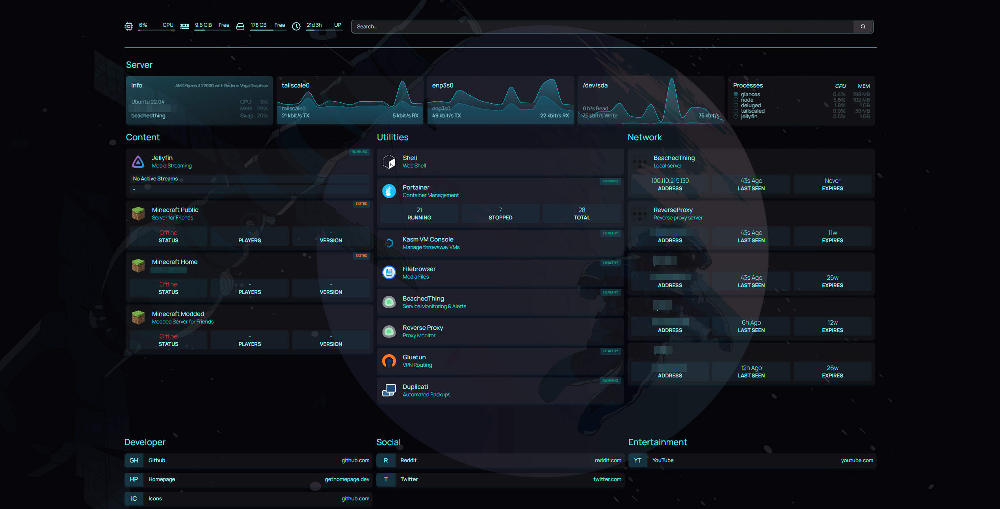

Setting Up a Laptop Home Server
Old electronics.
Many people just have old electronics lying around their house collecting dust. Once they get a new laptop or tablet, what use are old devices? Well there are plenty of different things you can do with them once they've expired past their best before date. One of which is using it as a server.Table Of Contents
Wait, A Server?
Yeah. A server doesn't have to be this absolute monster of a machine with 256gb of RAM and fancy SSDs and HDDs and crap. Nope, all it needs to be is a computer that runs some kind of server operating server - such as Windows Server, some variant of Linux, BSD, or any other miscellaneous OS depending on your project such as unRaid or TrueNAS.In my case, I chose Ubuntu server 22.04. I chose it because it is relatively lightweight, easy to setup, and includes drivers for many things on the device. I considered Proxmox as well, but decided to stick with Ubuntu server which I will set up to use Portainer - a web GUI for managing docker containers.
The device I am using is a old Dell Inspirion that my friend graciously gave to me. The screen is falling apart and you can see the exposed wiring and behind the screen which is a little iffy. Fortunately, it works great for our use case, as I will not really be using the display for anything aside from the installation of Ubuntu server. The laptop itself has 8gb of RAM and a 256gb SSD, as well as an ethernet port which is great, and not something you find often on laptops much anymore.
Step 1: Installing Ubuntu server
The OS Installation
As per usual with any Linux distro, I had to mess with the system's BIOS before I could launch the installation media. This really just involves changing the boot order, making sure UEFI boot is enabled, and disabling secure boot.I tried to use a ventoy usb to install Ubuntu server, but whenever I tried to boot it would cause a kernel panic and fail, so I instead just flashed the Ubuntu server iso onto a 8gb flash drive I had and installed from that.The installation was very straightforward, as Ubuntu server has a nice TUI installation interface. I wasn't sure about encrypting the drive at first, and I initally installed the OS without encryption - then I changed my mind and used full-disk luks encryption. The reason behind this was added security, but it came at the cost of needing to manually type in the password on the physical machine whenever it rebooted. I didn't see this as a huge issue, as the point of a server is to always be running anyways.
Inital System Checks
Once the installation had finished, the machine booted to the very-friendly tty prompt. I updated and upgraded the system, installed docker (and neofetch of course) and checked my local IP address I had been assigned my my router.sudo apt update -y && sudo apt upgrade -ysudo apt install docker.io neofetchip a
Be careful here, as sometimes Ubuntu will install the snap package version of Docker instead of the apt version. The snap version can cause some errors with portainer. To me, this is the only issue with Ubuntu. If you need to fix this yourself, you can either download docker via the offical website instructions, or by removing snap.
Creating a Static IP
I also had to configure the device to use a static IP that would not change. This would make it easier to isolate it on my network. To do this, you must edit the config file/etc/netplan/00-installer-config.yamland edit the respective interface config:
network:
ethernets:
enp1s0:
addresses: [192.168.1.70/24]
gateway4: 192.168.1.254
nameservers:
addresses: [1.1.1.1, 8.8.8.8]
dhcp4: false
version: 2
- ethernets - this line defines that we will be using ethernet instead of wifi.
- enp1s0 - this is the name of the interface we will be using. You can get a list of these with the command "ip link". Wireless interfaces will usually start with a W and ethernet interfaces will usually start with an E.
- addresses - this defines the actual static IP we would like to assign. In my case it is "192.168.1.70". "/24" defines the subnet of the network, which is basically what IP addresses are allowed to be assigned.
- gateway4 - this is the IP of the router we will use, also known as the gateway. You can find this with the command "ip route".
- nameservers - these are the DNS servers you would like to use for your system. In this case I have "1.1.1.1" and "8.8.8.8" which are cloudflare and google's DNS servers, although you are free to use a different one or even run your own!
- dhcp4 - this just tells the system that we do not want to use DHCP to obtain our local IP address, but rather use the one we've already specified.
Laptop Tricks
Because this was a laptop, I would like to be able to close the screen and not have to worry about it shutting down. Thanks to TechHut for this. This is very easy to do, and only requires a configuration change in/etc/systemd/login.conf
and set this
HandleSuspendKey=ignore
HandleLidSwitch=ignore
Then simply reboot.
Tailscale VPN
I wanted to access my server from outside my home. As it was right now, I would only be able to connect if I was on the LAN (Local Area Network). Generally there are two solutions to this.The first is port forwarding which involves passing a port through your router to the big bad internet. This is great for something like a website, but not so much for things such as filesharing. I didn't want to do this, as anybody would be able to connect and attack my server even with passwords and proper authentication. This left the other option.
A VPN (Virtual Private Network) is a remote way to connect to a LAN. I went over VPNs in more detail on my Staying Hidden Guide post.
I have set up my own VPN using Wireguard in the past, but it is complicated and annoying, as you have to manually configure each device connecting. Instead, I am using a free and open-source service called Tailscale. I really like this service, because they create your very own VPN network between all of your devices automatically, and also give you a special domain to use on that network. New devices can very easily be connected by downloading the client on that respective device, and logging in. I have never been prompted to pay for any kind of premium, so I highly recommend this service.
 Using this, my laptop, gaming PC, and phone can all talk to my server, just by using the assigned IP or domain.
Part 2: Services
Now that the basics of my server were all setup and ready to go, it was time to start configuring the actual services that I will be using. The ones I decided to use were Portainer for docker containers, Jellyfin for media, MeTube for video downloading, PiHole for adblocking, Samba for filesharing, Homepage for a homepage (don't you love naming conventions?), and Nextcloud for cloud utilities.Portainer
The first thing I set up was portainer, as this would give me a graphical web interface to set everything else up. While you can manage containers via command-line, I decided to use portainer because it would be easier to manage my containers, as I wouldn't have to ssh into my server every single time I wanted to check or change something in a container's config.Ironically, portainer runs in a docker container itself, so this would be the only one I would have to create through ssh. First was the docker volume to store data:
docker volume create portainer_data
Next was the creation of the actual container. Don't worry, I'll walk through this command with you:
docker run -d -p 8000:8000 -p 9443:9443 --name portainer --restart=always -v /var/run/docker.sock:/var/run/docker.sock -v portainer_data:/data portainer/portainer-ee:latest
- run - this says that this is a container to be run
- -d - this means we want to run this container as a "daemon" or "background process". This allows us to still have control of the terminal.
- -p 8000:8000 and -p 9443:9443 - this is the port mapping of 8000 to 8000. This means that port 8000 on the container will correspond to port 8000 on the host machine. If you have multiple services like we will have later, this allows you to change the port a container is running on very easily if there were conflicting services.
- --name - the name of the container.
- --restart=always - the restart policy of the container. This means that it will always be running, and will always start on boot.
- -v /var/run/docker.sock:/var/run/docker.sock - this is a "bind" map to /var/run/docker.sock on both the container and host machine, similarly to the pervious port mapping.
- -v portainer_data:/data - this is a "volume" map from the container's /data directory to the host volume of portainer_data that we created in the pervious command.
- portainer/portainer-ee:latest - this is the actual image we are downloading and using. It is the latest and most up-to-date version available.
Jellyfin
Jellyfin is a media server, which basically means that it can stream content such as mp3s and mp4s to your devices, much in the same way Netflix or Spotify works. Instead of downloading the content to the device you are using, you can just stream it from the server!Now that I had Portainer set up, Jellyfin was even easier to set up because of the Portainer GUI. I am not going to explain exactly how to do the same steps with the CLI, as you can just view the above example with portainer, and change it as you see fit.
First I set the image docker would pull from. This was the linuxserver/jellyfin:latest image. I then mapped the container ports 7359 and 8096 to their counterparts on the host system, setting 7359 as UDP since it would be used for the actual stream of content, and 8096 as TCP, since it was used for the web interface the user interacts with.
For the actual content location, I mapped /data/Videos on the container to a bind on /usr/share/jellyfin/videos, and /config to a bind on /etc. All of these volumes were writable by the container.
Finally, I mapped the env variables of PUID=1000, PGID=1000, and TZ to my timezone. I also set the restart policy to "unless stopped".
Samba
Samba, more commonly called SMB or Server Message Block, is a local filesharing protocol that computers can use to transfer files locally. This is very commonly used in tandem with Active Directory in an office. SMB was also the target of the famous EternalBlue exploit (though newer versions of SMB of course do not have this problem).I decided to configure SMB on my server, so I could remotely transfer video files to my Jellyfin server.
To do this, we first install Samba, and then configure it:
sudo apt install samba
sudo nano /etc/samba/smb.conf
my Samba configuration:
[sambashare]
path = /usr/share/jellyfin
read only = no
browsable = yes
ntlm auth = true
then all you had to do was open your file explorer and go to smb://100.75.245.84. Make sure to allow Samba through your firewall if you are using one like ufw.
sudo ufw allow samba
Homepage
Homepage is a simple application that will host a customized dashboard of your various services running on your server. All it requires is a couple yaml configuration changes which are really easy to make.My server homepage 